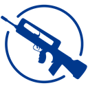
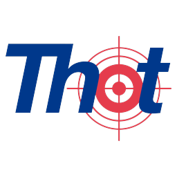

Les épreuves
- Quelle épreuve à quel âge ?
- La précision : une position adaptée à chaque âge
- La carabine 3 positions à 10 m (3x20)
- Le pistolet vitesse
- La cible mobile
- L’arbalète field
- Le para-tir à l’école de tir
- Les plateaux
- Le championnat de France des clubs écoles de tir
- Ma feuille de match
- Les règles communes
- Le règlement officiel
Le guide des parents
- À partir de quel âge, et que faut-il ?
- Combien ça coûte ?
- Le matériel : quoi acheter, et quand ?
- La sécurité et l’hygiène
- C’est quoi, une cible couleur ?
- Comment l’encourager ?
- Ce que le tir apporte à votre enfant
- Les compétitions, côté parents
- Comment vous impliquer ?
- Le petit lexique des parents
- Les questions des parents
La progression pédagogique
- C’est quoi, une progression pédagogique ?
- Les cibles couleur, le fil conducteur
- Les principes avec les jeunes
- Méthode globale et méthode analytique
- Des exemples global – analytique – global
- Découvrir, apprendre, automatiser le geste
- Du plus facile au plus difficile
- Valider une cible couleur
- Le rôle des parents
- Et après l’école de tir ?
Mon annonce
- Travailler l’annonce coup par coup, sur un carton ISSF
La famille MonTirSportif
Tous les sites

Site TARLe Tir aux Armes Réglementaires.
Site ThotLe dieu de l’écriture et le mot de passe fort.